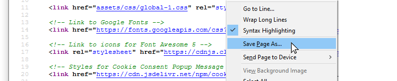
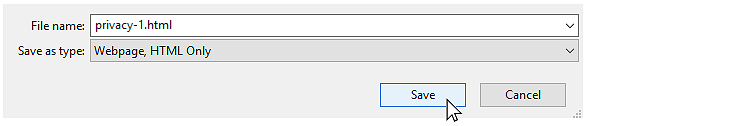
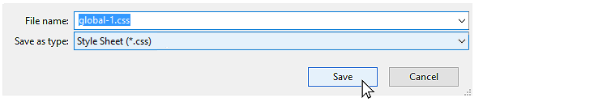
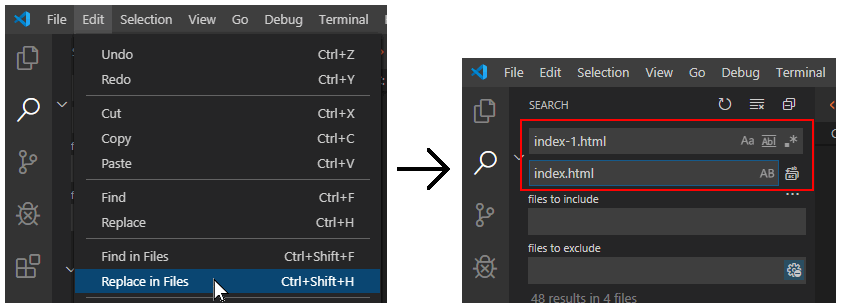
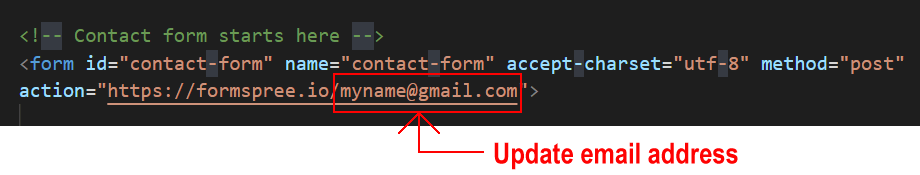
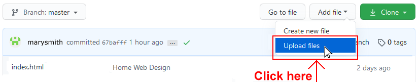

Introduction
In this project you will create your personal website, based on one of three sample website templates. Each of these website templates has four web pages:
- Home page and Privacy page (in main folder)
- Portfolio page (in /portfolio sub-folder)
- Contact page (in /contact sub-folder)
For each of the three websites, there is one stylesheet file for all four pages, named global-1.css, global-2.css and global-3.css. These three stylesheets are in the assets/css sub-folder.
There are also a number of images, all located in the assets/img sub-folder.
You can display finished versions of the three websites by clicking the images below.
Create the project folders
Your first step is to create folders that will store the web pages, CSS files, and images you will download.
- If a folder named websites does not already exist on your computer, create it now.
- Inside the websites folder, create the following sub-folders if they do not already exist:
C:/websites/assets
C:/websites/assets/css
C:/websites/assets/img

Download the three sample Home web pages
Follow these steps to download the three 'Home' web pages to your websites folder.
- Go to the first sample Home web page at this web address:
index-1.html
- Right-click anywhere on the page (except on an image) and choose View page source (Chrome or Mozilla Firefox).

- Right-click on the displayed text and choose Save as… (Chrome) or Save Page As… (Mozilla Firefox).

- In the File name: box, change the name of the file to index-1.html.
- In the Save as type: dropdown list, change from the default value Webpage, Complete to Web Page, HTML Only.
- Save the web page as index-1.html file in your C:/websites folder.

- Repeat these steps for the following two other sample Home pages:
index-2.html
index-3.html
You should now have these three HTML files saved in your C:/websites folder.

Download the three sample Privacy web pages
Follow these steps to download the three 'Privacy' web pages to your websites folder.
- Go to the first sample Privacy web page at this web address:
privacy-1.html
- Right-click anywhere on the page and choose View page source (Chrome or Mozilla Firefox).

- Right-click on the displayed text and choose Save as… (Chrome) or Save Page As… (Mozilla Firefox).

- In the File name: box, change the name of the file to privacy-1.html, change the Save as type: to Web Page, HTML Only and save the web page as privacy-1.html file in your C:/websites folder.

- Repeat these steps for the following two other sample Privacy pages:
privacy-2.html
privacy-3.html
You should now have these six HTML files saved in your C:/websites folder.

Download the three sample Contact web pages
Follow these steps to download the three 'Contact' web pages to your websites/contact sub-folder.
- Go to the first sample Contact web page at this web address:
index-1.html
- Right-click anywhere on the page and choose View page source (Chrome or Mozilla Firefox).

- Right-click on the displayed text and choose Save as… (Chrome) or Save Page As… (Mozilla Firefox).
- In the File name: box, change the name of the file to index-1.html, change the Save as type: to Web Page, HTML Only and save the web page as index-1.html file in your C:/websites/contact sub-folder.

- Repeat these steps for the following two other sample Contact pages:
index-2.html
index-3.html
You should now have three HTML files saved in your C:/websites/contact sub-folder.

That’s it. You do not need to download any more HTML files.
Download the three sample CSS files
You will now download the three sample CSS files to the C:/websites/assets/css sub-folder.
- In your web browser, open the first CSS file at this web address:
global-1.css
- Right-click on the displayed CSS file, choose Save as… (Chrome) or Save Page As… (Mozilla Firefox).

- Save the global-1.css file in your C:/websites/assets/css sub-folder.

- Repeat these steps for the following two other CSS files:
global-2.css
global-3.css
You should now have these three CSS files saved in your C:/websites/assets/css sub-folder.

Download the image files
Right-click on the following images and download them to your C:/websites/assets/img sub-folder.
Sample web pages: 1
Sample web pages: 2
Sample web pages: 3
Portfolio project images
Menu images
Choose the sample version for your personal website
Review the three versions of the sample personal websites in your web browser. On a Windows PC, the 'Home' page files should be at the following locations:
file:///C:/websites/index-1.html
file:///C:/websites/index-2.html
file:///C:/websites/index-3.html
From the sample Home pages, click on the menu options to view the related Portfolio, Contact and Privacy web pages.
Which one of the three sample versions is closest to the one you would like for your own personal website?
Choose one.
You can change the text, fonts, colours and images of these web pages later, according to your requirements.
Update the HTML file names
Whichever of the three sample personal websites you choose, you will need to update the names of the four HTML files. Follow these steps.
- In Visual Studio Code, open your four chosen HTML files.
For example, index-1.html and privacy-1.html (in the main websites folder), index-1.html (in the websites/portfolio sub-folder) and index-1.html (in the websites/contact sub-folder).

- Use the File | Save As command to save the four files with the following new names:
index.html and privacy.html (in the main websites folder)
index.html (in the websites/portfolio sub-folder) and
index.html (in the websites/contact sub-folder.
The folder and file structure for your four web pages should be as shown below.

Leave all four of your web pages with their new file names open in Visual Studio Code.
Update the menu hyperlinks in your web pages
Your next step is to update the hyperlinks in your web pages. Here are the steps.
- Ensure that the four web pages for your personal website are open in Visual Studio Code. Close any other open files.

- Choose the Edit | Replace in Files command to open the multi-file search-and-replace option at the left of the Visual Studio Code screen.
- In the Search box, enter index-1.html (or index-2.html or index-3.html, as appropriate).
In the Replace box, enter index.html.

- At the right of the Replace box, click the Replace All icon. And then click the Replace button to confirm.

- You need to perform two more search-and-replace operations.
- In the Search box, enter privacy-1.html (or privacy-1.html or privacy-1.html, as appropriate).
In the Replace box, enter privacy.html, and confirm your replacement.
- In the Search box, enter global-1.css (or global-2.css or global-3.css, as appropriate).
In the Replace box, enter global.css, and confirm your replacement.
- Open the stylesheet file you want to use for your personal website - named global-1.css or global-2.css or global-3.css.
Use the File | Save As command to save the stylesheet with the new name of global.css.
- Finally, use the File | Save All command to save all your open files.
That's all your search-and-replace operations complete.
Open your four web pages in your web browser and check that:
- All four web pages use the correct file name for the stylesheet - global.css.
- All hyperlinks between the web pages are to files named index.html or privacy.html.
Update the meta tags in the <head>
In the <head> of your four web pages, within the <title> and <author> meta tags, you can see the name 'Mary Smith.'
Replace this with your own name. You may also wish to change the sample text in the <description> meta tags.

When finished, save the four HTML files.
Update the Google Analytics ID
Near the top of your four HTML files, just before the closing </head> tag, you can see a sample Google Analytics Tracking Code.

Each Google Tracking Code has a unique ID in its first and last line. For each of your fur web pages, replace the sample Google Tracking ID with your own Google Tracking ID. The instructions for viewing your website’s unique Google Tracking ID are here.
When finished, save your four HTML files.
Update the privacy pop-up code and message
You need to edit the ‘pop-up‘ privacy code and message in all four of your web pages.
- Within the <head> at the top of your HTML files, you can see a link to the stylesheet for the privacy pop-up message.

- At the bottom of your web pages, just before the closing </body> tag, you can see the JavaScript code for the privacy pop-up message.
 Near the end of the lines of the JavaScript code, you can see the web address of the privacy page. For all four web pages, change the ibat-web-dev.github.io username to your username on GitHub.
Near the end of the lines of the JavaScript code, you can see the web address of the privacy page. For all four web pages, change the ibat-web-dev.github.io username to your username on GitHub.
- When finished, save your four HTML files.
Update your contact details in the mobile menu
For all four web pages, in the flyout-menu section of the mobile menu, are more details you will need to change.

Change the name 'Mary Smith', the profile image and the various contact details to your own. You can add or remove different social media contact points, such as Twitter, Facebook, YouTube or Instagram, as required.
When finished, save your four HTML files.
Update your contact form endpoint
You need to update the form in your contact page so that details entered to the form by users are forwarded to your email address.
- In Visual Studio Code, open the index.html file in your /contact sub-folder.
- Update the form’s action value by copying-and-pasting the endpoint value from Formspree. See the example shown below.

- Save your index.html file when finished.
Customise the design elements
Feel free to make any changes you require to content and design of the four web pages.
When finished, save your four HTML files and your stylesheet.
Upload your project to GitHub
The final step is to upload your project to GitHub.
- If you are not already signed in to your GitHub account, sign in now.
- On the left of your GitHub home page, click the name of the repository that holds your web pages.
- With your main repository displayed on your GitHub screen, click the Add file button and, from the dropdown list displayed, choose the option Upload files.

- In File/Windows Explorer on your computer, display your websites folder and then drag-and-drop the following files and sub-folders to the GitHub tab in your web browser.
 Do not include the portfolio sub-folder in the upload. Because the total number of files in this upload operation may exceed 100. This is the limit for any one upload to GitHub.
Do not include the portfolio sub-folder in the upload. Because the total number of files in this upload operation may exceed 100. This is the limit for any one upload to GitHub.
- Scroll down to the bottom of the GitHub screen, enter a short message in the Commit changes box, click the Commit changes button, and wait for the upload to complete.
- After this upload is complete, GitHub redisplays your main repository screen.
Click the folder named portfolio.

- In File/Windows Explorer on your computer, display your portfolio folder and then drag-and-drop the index.html file to the GitHub tab in your web browser.
- Scroll down to the bottom of the GitHub screen, enter a short message in the Commit changes box, click the Commit changes button, and wait for the upload to complete.
Your web pages are now published on GitHub. Your Home page has a web address similar to the following, where username is the username you have chosen for your GitHub account:
https://username.github.io/index.html
or, simply:
https://username.github.io
It may take a few minutes for your uploaded files to appear on GitHub.
Return to Contents.